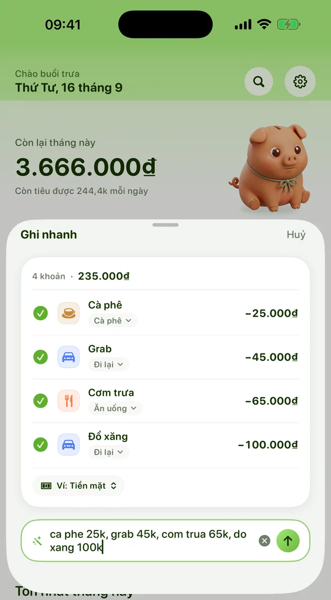
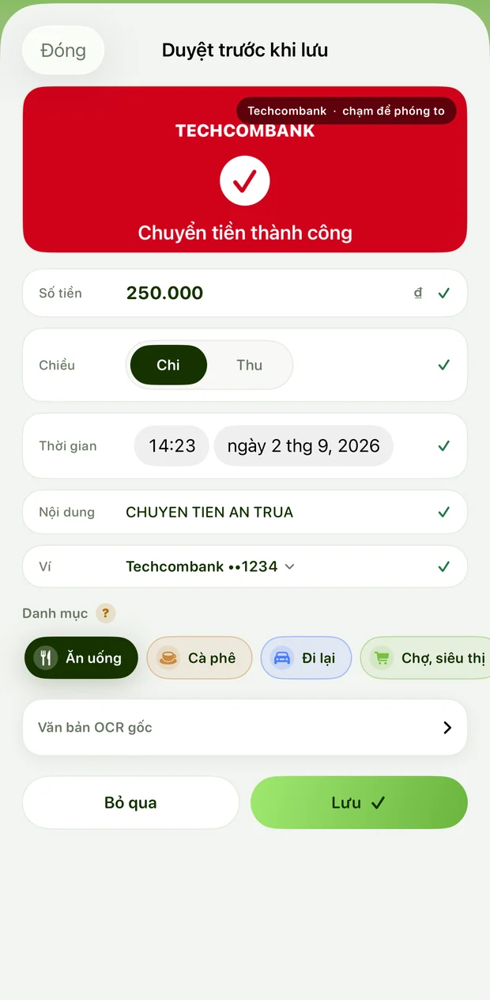
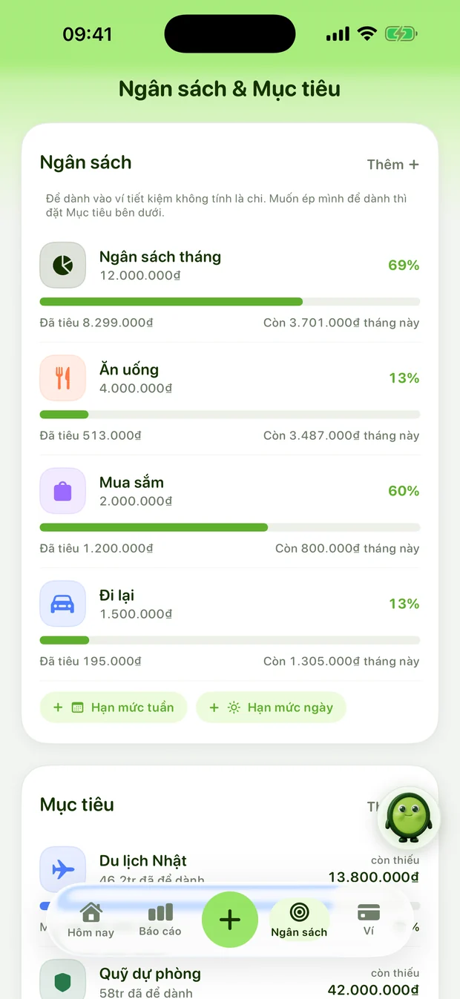
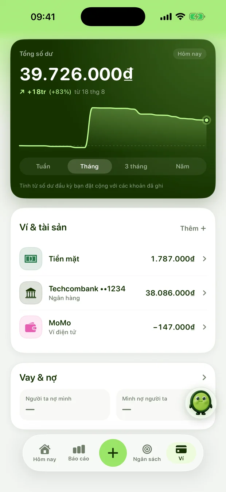

Gõ “cà phê 25k, grab 45k, cơm trưa 65k” — Xu tách ra từng khoản, tự xếp danh mục, không dấu cũng hiểu. Sổ nằm trên máy bạn: không tài khoản, không quảng cáo.
gõ không dấu vẫn hiểuquét biên lai trên máykhông tài khoảnkhông quảng cáomột dòng nhiều khoảnngân sách nhắc trướcthẻ tín dụng và vay nợtrả một lần dùng mãi
gõ không dấu vẫn hiểuquét biên lai trên máykhông tài khoảnkhông quảng cáomột dòng nhiều khoảnngân sách nhắc trướcthẻ tín dụng và vay nợtrả một lần dùng mãi
0
byte sổ rời khỏi máy
Không tài khoản, không máy chủ nào giữ sổ chi tiêu của bạn.
418
bài kiểm tự động
Chạy lại mỗi lần sửa, gồm cả bộ chạy trên sổ thật của tác giả.
3 giây
từ mở app tới ghi xong
Một dòng chữ, hoặc một tấm ảnh chụp màn hình chuyển khoản.
01Cách ghi
Từmộtdòngchữgõvộilúcđứngchờtínhtiền,tớibức tranh đủvềtiềncủabạn—Xulàmhếtphầnởgiữa,ngaytrênmáy,khôngcầnmạng.
02Ba bước
Nhanhtớimứckhôngkịpngại
Lý do người ta bỏ ghi sổ không phải vì lười, mà vì mỗi khoản tốn quá nhiều thao tác. Xu bỏ hết phần đó đi.
01
Gõ như nhắn tin
Mở app, gõ “cf 25k, grab 45k”. Không cần chọn danh mục, không cần chọn ví, không cần bấm qua ba màn hình.
02
Xu đọc và xếp
Số tiền, danh mục, ví, ngày giờ — Xu tách ra hết. Chữ không dấu được trả lại dấu khi lưu vào sổ.
03
Bạn chỉ việc gật
Thẻ hiện ra trước khi lưu. Sai chỗ nào sửa chỗ đó, đúng rồi thì một chạm là xong.
03Thử ngay
Gõ thử một câu
Đây là bản rút gọn của chính bộ đọc trong app. Gõ như bạn vẫn nhắn tin — nhiều khoản thì ngăn bằng dấu phẩy.
Cà phê
Cà phê
−25.000₫
Grab
Đi lại
−45.000₫
Cơm trưa
Ăn uống
−65.000₫
3 khoản · tổng chi 135.000₫
04Tính năng
Ghinhanh.Hiểurõ.Khôngphảihọc.
Bốn thứ Xu làm khác. Mỗi thứ sinh ra từ một lần ghi sổ bị bỏ dở.
01Gõ nhanh
Một dòng, nhiều khoản
Số tiền, danh mục, ví, ngày giờ, cả vay mượn — Xu đọc ra từ đúng cách bạn nói. “1tr2” là 1,2 triệu. “cf 25k momo” là cà phê, 25 nghìn, ví MoMo.
Gõ không dấu vẫn hiểu, tự trả lại dấu khi lưu
Cộng trừ nhân ngay trong câu: “an nhau 100k+50k*2”
Giá đô tự quy đổi: “chatgpt 20$”
Đọc ngay trên máy, không cần mạng

02Quét ảnh
Chụp biên lai, Xu tự điền
Chuyển khoản rồi chụp màn hình như thói quen cũ. Xu đọc số tiền, thời gian, nội dung và cả bốn số cuối thẻ, rồi dựng sẵn khoản chờ bạn duyệt.
Đọc bằng Vision của Apple, chạy ngay trên máy
Ảnh không bao giờ được tải lên bất kỳ đâu
Nhận cả biên lai giấy lẫn ảnh chụp màn hình ngân hàng
Tự nhận ảnh chụp màn hình mới nếu bạn cho phép

03Ngân sách
Nhắc trước khi lố, không phải sau
Một con số cho hôm nay, thay cho một bảng kế toán. Xu nhìn đà tiêu của bạn và nói trước khi hết tháng, chứ không tổng kết lúc tiền đã đi rồi.
“Còn tiêu được bao nhiêu mỗi ngày” tính lại sau mỗi khoản
Tách khoản lớn bất thường ra khỏi đà tiêu hằng ngày
Ngân sách theo danh mục, theo tuần hoặc theo tháng
Nhắc trước ngày đến hạn thẻ tín dụng

04Ví, thẻ, nợ
Một con số cho tất cả
Tiền mặt, ngân hàng, ví điện tử, thẻ tín dụng, vàng, đất, tiền người ta nợ bạn — gộp thành tài sản ròng. Quẹt thẻ là nó giảm ngay; trả thẻ thì không đổi, vì tiền chỉ đổi chỗ.
Thẻ tín dụng và ví trả sau tính đúng kiểu dư nợ
Vay mượn ghi theo tên người, nhắc khi tới hạn
Trả góp chia đúng gốc và lãi
Đồ thị tài sản ròng khớp với con số trên đầu

05Trợ lý AI
Hỏi bằng tiếng Việt, hỏi như hỏi người
“Tháng này ăn ngoài hết bao nhiêu”, “Nam trả chưa”, “sao tháng này hụt tiền”. Xu đọc sổ rồi trả lời — và khi cần sửa sổ, nó đưa thẻ duyệt chứ không tự tay sửa.
Hỏi đáp bằng tiếng Việt, hiểu cả câu nói tắt
Mọi thay đổi đều qua thẻ “trước → sau”, bạn bấm Duyệt mới ghi
Bấm micro đọc thành tiếng, máy tự nghe ngay trên máy
Bản tin sáng và tổng kết tối Chủ nhật, dựng từ số thật
Chia hoá đơn
Ăn chung chia đầu người hoặc chia theo phần, ai nợ ai hiện ra ngay.
Sổ sự kiện
Chuyến đi, đám cưới, sửa nhà — gom riêng một sổ, có dự chi riêng.
Tổng kết năm
Báo cáo tuần, sức khoẻ tài chính, lịch chi theo ngày, nhãn tự gom.
Khoá bằng Face ID
Người khác cầm máy cũng không mở được sổ.
Xuất CSV và PDF
Dữ liệu là của bạn, mang đi bất cứ lúc nào.
Mục tiêu tiết kiệm
Đặt đích, Xu tính mỗi ngày cần để ra bao nhiêu.
05Phím tắt
Ghimàkhôngcầnmởapp
Khoản chi xảy ra lúc bạn đang bận. Mở app, chờ tải, tìm nút — bấy nhiêu là đủ để bạn thôi ghi. Nên Xu ra tận nơi bạn đang đứng.
Tiện ích màn hình
Hôm nay tiêu bao nhiêu, còn lại bao nhiêu, kèm nút ghi nhanh — ngay trên màn hình chính.
Cỡ nhỏCỡ vừaMàn khoá: ô chữMàn khoá: vòng trònMàn khoá: một dòng
Trung tâm điều khiển
Vuốt từ góc phải xuống, bấm một nút là màn ghi của Xu mở ra. Không phải tìm icon.
iOS 18 trở lên
Đảo động và màn khoá
Hạn mức còn lại của hôm nay chạy ngay trên Đảo động. Liếc một cái là biết, không mở app.
Live Activity
Nói với Siri
Ba câu có sẵn, không cần cài đặt gì:
“Ghi vào Xu”“Gõ nhanh vào Xu”“Hôm nay tiêu bao nhiêu trong Xu”
Chia sẻ từ app ngân hàng
Chụp màn hình chuyển khoản, bấm Chia sẻ, chọn Xu. Đọc được một lúc tối đa 20 ảnh.
Share sheet
App Phím tắt
Năm hành động để bạn tự ghép luồng riêng: ghi một khoản, ghi cả câu, hỏi Xu, mở màn ghi, hoàn tác khoản vừa ghi.
Tự động hoá
06Riêng tư
Sổcủabạnkhôngđiđâucả
Phần lớn app tài chính miễn phí sống bằng dữ liệu của bạn. Xu sống bằng một lần bạn trả tiền, nên không cần tới nó.
Không có gì để mất
Không tài khoản, không email, không số điện thoại
Không quảng cáo, không SDK theo dõi nào trong app
Ảnh biên lai và giọng nói không bao giờ rời khỏi máy
Đồng bộ qua iCloud riêng của bạn — chúng tôi không đọc được
Xu đọc chữ và giọng nói bằng Vision và Speech của Apple, chạy trên máy
Nói rõ phần gửi đi
Trợ lý AI chỉ chạy sau khi bạn xem Xu gửi gì rồi bấm đồng ý
Khi bật, câu bạn hỏi và phần sổ cần để trả lời đi qua Google Gemini
Máy chủ của Xu không ghi câu hỏi, không ghi câu trả lời
Không. Sổ nằm trên máy bạn, và trên iCloud riêng của bạn nếu bạn bật đồng bộ — chúng tôi không truy cập được vào đó. Chỉ trợ lý AI, một tính năng tuỳ chọn của bản Pro, mới gửi câu bạn hỏi và phần sổ cần để trả lời tới Google Gemini. Tắt trợ lý là dừng tất cả.
Ghi khoản đầu tiên trong ba giây
Miễn phí, không tài khoản, không quảng cáo. Mở app lên là ghi được ngay.